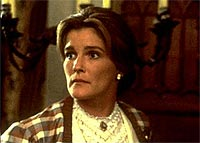
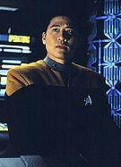
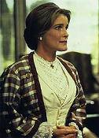
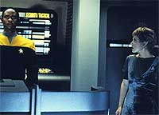
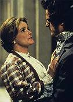

|
MANCHETE
DO EPISDIO
Meta da histria explorar desejos e
medos inconscientes da
tripulao
Episdio
anterior | Prximo
episdio
Sinopse:
Data Estelar: desconhecida.
A Voyager se prepara para um encontro potencialmente perigosos com
os Botha, mas a capit Janeway est estafada. O Doutor ordena que
ela tire uma licena no holodeck --em um holo-romance que ela
costumava usar. Poucos minutos aps entrar no holodeck, ela
convocada ponte para fazer o primeiro contato com os Botha. O
representante Bothano d uma recepo pouco amistosa e convoca um
encontro para determinar se eles permitiro ou no que a Voyager
atravesse seu espao.
 Enquanto
a nave se encaminha para o local do encontro, Janeway imagina ter
visto Beatrice, a garotinha de seu holo-romance, em um dos
corredores da nave. Incapaz de ligar o evento aos experimentos que a
tripulao est realizando na engenharia com holoemissores, a
capit comea a achar que est vendo coisas.
Mais tarde, aps Janeway ouvir a voz de seu noivo, Mark, ela
atacada por uma faca pela senhora Templeton, outro personagem do
holodeck. Para tornar as coisas mais estranhas, a nica outra
pessoa capaz de testemunhar essas presenas Kes.
Janeway deixa Chakotay como responsvel pelo encontro com os Botha,
enquanto ela passa por uma bateria de exames mdicos. Mais uma vez
os aliengenas reagem com hostilidade, e agora chegam a atacar a
Voyager. Saindo da enfermaria, a capit volta ponte, onde o
Bothano est na tela. Ela se choca ao ver que ele Mark. Ao
menos, o que parece para ela.
 Na
mesma tela, Kim v sua namorada, Libby, e Tuvok v sua esposa, T'Pel.
Tom Paris tambm tem uma viso: seu pai, o almirante Paris.
Enquanto isso, B'Ellana Torres contata a ponte e informa que a
tripulao parece afetada por um campo bioeltrico com
propriedades psicoativas emanado da nave Bothana. Mas enquanto ela
trabalha para bloquear o campo, ela tambm afetada e fica
catatnica.
Sobra para Kes, cujas habilidades telepticas permitem maior
resistncia ao campo, e para o Doutor a tarefa de completar o
trabalho de B'Elanna e bloquear a fora misteriosa que est
desabilitando a tripulao.
Kes consegue completar a tarefa e restaurar a tripulao ao
normal. Um teleptico Bothano ento confessa ter causado a
perturbao, mas ele desaparece antes que se possa aprender mais
sobre ele.
Comentrios:
"Persistence
of Vision" um bom exemplo de entender o "modus
operandi" dos roteiristas de Voyager diante de furos de
roteiro --"ns no entendemos completamente o que aconteceu
bordo da nave". E o que no entendemos, nem precisamos nem
podemos explicar. Essa foi a concluso tirada por Janeway ao final
deste episdio, que se props a fazer uma anlise psicolgica da
tripulao.
 Alguns
dos mistrios sem resposta: por que as primeiras alucinaes,
sofridas pela capit, causavam reaes visveis, como se ela
estivesse interagindo com os personagens inexistentes, se
posteriormente descobrimos que o processo alucingeno deixava os
tripulantes catatnicos?
Com a nave praticamente desabilitada, por que os aliengenas no
deram continuidade a seu propsito, seja ele qual fosse? Embora Kes
e o Doutor ainda estivessem conscientes, eles seriam incapazes de
sozinhos conter uma invaso.
Ou ainda: onde estava aquele aliengena na verdade e qual era o seu
propsito a bordo da Voyager?
Um resposta que da para imaginar a de que os aliengenas
estimulavam o inconsciente dos tripulantes a se manifestar para
descobrir se eles possuam ou no uma natureza hostil. Mas nenhuma
atitude posterior recuperao da tripulao d a entender
que fosse esse caso, mantendo a questo em aberto.
Tirando esses problemas inerentes ao enredo, que por sinal mais
uma histria em que no acontece nada, pode-se dizer que h
qualidades no roteiro. interessante conhecer o inconsciente dos
personagens --uma abordagem la "The Naked Time",
da Srie Clssica, para se mostrar o que se passa dentro de
cada um dos personagens.
 O
sentimento de "infidelidade" de Janeway por se envolver
romanticamente com hologramas enquanto seu namorado Mark a espera na
Terra, a apario do almirante Paris para Tom, dando o tom
traumatizante do relacionamento dos dois e a apario de Tuvok em
Vulcano so pontos interessantes.
Menos interessante mas mais engraado o desejo sexual
inconsciente de B'Elanna Torres por Chakotay. (Alis, de onde os
produtores tiraram a idia de que Chakotay algum tipo de gal
da srie?)
A alucinao de Kes com seu corpo sendo todo queimado tambm no
primorosa --no diz nada sobre o inconsciente do personagem, ao
contrrio das outras. Em compensao, no d para dizer que a
Ocampa no teve funo nessa histria.
 Esse
foi um dos poucos episdios que conseguiu fazer bom uso de Kes,
como a nica personagem capaz de controlar (de forma limitada) as
alucinaes e salvar a nave. Pouco convincente que o Doutor
saiba como conduzir o trabalho de B'Elanna na engenharia! Mas como
em Voyager a coerncia no costuma ser o elemento mais
importante de um roteiro, o que vale desatar o n do episdio,
nem que seja recheando com um monte de tecnobaboseira --o que,
alis, tambm sobra neste episdio.
No fim das contas, no d para atirar muitas pedras no episdio,
porque, apesar das incoerncias e inconsistncias, ele capaz de
divertir.
Citaes:
Doutor - "My programmers
didn't clutter me up with pithy Earth trivia."
("Meus programadores no me entupiram com curiosidades
terrestres inteis.")
Trivia:
 Nesse episdio temos a volta do ator Stan Ivar como Mark, o noivo
que a capit deixou na Terra. Sua primeira apario foi no piloto
da srie, "Caretaker".
Tambm volta Michael Cumsty como o Lorde Burleigh e toda sua
famlia, que j haviam estrelado no primeiro ano, em "Cathexis".
Nesse episdio temos a volta do ator Stan Ivar como Mark, o noivo
que a capit deixou na Terra. Sua primeira apario foi no piloto
da srie, "Caretaker".
Tambm volta Michael Cumsty como o Lorde Burleigh e toda sua
famlia, que j haviam estrelado no primeiro ano, em "Cathexis".
Em entrevista, Kate Mulgrew disse: "Um
telepata toma a nave e se apresenta como meu noivo, o cara que
deixei na Terra. Assombroso. E outras pessoas tomam forma na minha
frente e comeo a temer que estou perdendo o controle, o que
significaria o fim da misso. Portanto, uma coisa bem diablica
para Janeway --e deliciosa de atuar."
Ficha
tcnica:
Escrito por Jeri Taylor
Direo de James L. Conway
Exibido em 30/10/1995
Produo: 024
Elenco:
Kate Mulgrew como
Kathryn Janeway
Robert Beltran como Chakotay
Roxann Biggs-Dawson como B'Elanna Torres
Robert Duncan McNeill como Tom Paris
Jennifer Lien como Kes
Ethan Phillips como Neelix
Robert Picardo como Doutor
Tim Russ como Tuvok
Garrett Wang como Harry Kim
Elenco convidado:
Stan Ivar como Mark
Michael Cumpsty como Lorde Burleigh
Carolyn Seymour como sra. Templeton
Thomas Alexander Dekker como Henry
Lindsey Haun como Beatrice
Warren Munson como almirante Paris
Patrick Kerr como Bothan
Marva Hicks como T'Pel
Episdio
anterior | Prximo
episdio
|